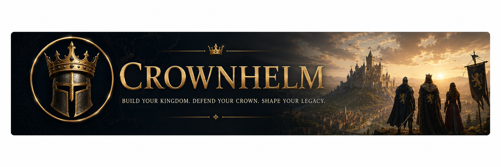

Pick a brush, then click & drag. Paint resources AND terrain — water, hills, plains. Mirror modes keep it fair; pick a size (Epic fits 8 realms); 🎲 Scatter seeds a wild land to edit.
⚔️
💾 Save & Load
Autosave updates itself every 40s — use Slots 1–3 to keep kingdoms safe forever.
Loading 3D engine… (needs internet the first time)
Wrong door! You opened the game file directly, so your saved kingdom and the best graphics can't load here. Click here to open the REAL game with your kingdom (If that link fails, double-click "Play Tidefall" on your Desktop first, then try again.)
Anno Domini MCCCXX
Crown helm
A whole land to rule

Roam a wide open country of hills, rivers, forests and coasts. Build your realm into a beautiful city — then deal with your neighbouring kingdoms — up to seven of them — however you choose: trade gifts and keep the peace, or march your regiments to war and take their lands. Befriend them, or conquer every keep and rule the realm.
Muster your campaign
How to Play
The first five minutes
Your Keep trains Workers — keep it training, always.
Send Workers to Wood (forests), Metal (grey rock), Gold (gold veins) and Food (farms, sheep, deer, fishing).
Build Houses the moment population nears its cap, or training stops dead.
Drop-off buildings pay their way: a Storehouse by the trees, a Mining Camp by the veins — the walk home is most of the work.
Growing the realm
Build your city: Houses, Farms, Mills, Markets, Churches, Castles.
Farms need a farmhand — right-click a farm with a Worker. A fresh field yields little until the crop comes in.
Advance the Age at the Keep to unlock Knights, Cannon and your faction's champion.
Research at the Barracks, Armourer and Castle — armour and weapons carry through the whole army.
Your neighbours
Realms (top bar) — gift gold to buy friendship, or declare war when you are ready.
Every rival wants the same land. Peace buys time; it does not buy safety.
Win by Conquest, by holding a finished Wonder, or by whichever victory you chose when you mustered.